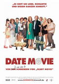

 Julia Jones hat ihrem Tagebuch ganz schoen viel anzuvertrauen: Zu viel Schokolade zum Fruehstueck, zu fett, kein Freund! Das ist schon frustrierend, und deshalb macht sie sich auf und besucht einen echten Date Doktor.
Der hat schnell einen Plan und schickt seine Kundin zu "Pimp My Bride", wo aus dem uebergewichtigen Opfer ein rankes schlankes Supermodel gemacht wird. So geht alles viel einfacher, und schnell ist mit dem wohlhabenden Grant Funkyerdoder ein passender Braeutigam gefunden. Doch leicht ist das Glueck auch nicht zu bekommen, denn erst steht noch ein Besuch bei den Schwiegereltern an, dann geht's zum Wedding Planner und dann sind da ja auch die Hochzeits-Crasher, die aus dem Weg zu raeumen sind ...
E-Mail--Anfrage zu Date Movie→ zurueck zu den Filmen der Woche
Quelle: http://kino-ka.de/?id=120-0-1815